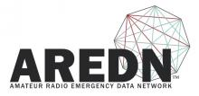

All Things Open is the largest open source/tech/web event on the East Coast of the United States. The 2018 conference will take place October 21 | 22 | 23 in downtown Raleigh, NC and The Research Triangle.
Exhibitors

AREDN™ (Amateur Radio Emergency Data Network) organization develops open source solutions in the Amateur Radio Community for purposes of Emergency Communications using wireless high speed data technologies.
The AREDN team builds upon linux, OLSR, and OpenWRT using commercial Wireless ISP devices and extending frequencies across a wide range of Amateur only microwave bands. The result is a commercial grade off-the-grid viable alternative network suitable for restoring some degree of inter/intra‐net connectivity “when all else fails”.
Booth Number: 719
BeagleBoard.org is an all volunteer activity started-up by a collection of passionate individuals interested in creating powerful, open, and embedded devices. They invite you to participate and become part of BeagleBoard.org, defining its direction.
Support for the Beagle Board comes from the very active development community through their website, the mailing list, and the IRC channel. Distribution is handled by Digi-Key, a major international distributor.
Booth Number: 302
Big Data Day LA is the largest data conference of it's kind in Southern California. Spearheaded by Subash D’Souza and organized and supported by a community of volunteers, sponsors and speakers, Big Data Day LA features the most vibrant gathering of data and technology enthusiasts in Los Angeles. The first Big Data Day LA conference was in 2013, with just over 250 attendees. We have since grown to over 550 attendees in 2014, 950+ attendees in 2015, 1200+ attendees in 2016, and 1550+ attendees in 2017.
Booth Number: 203
Silver Sponsor
Black Duck by Synopsys provides automated solutions for securing and managing open source software. With the rapid, widespread adoption of open source software, Black Duck is a key component of Synopsys’ Software Integrity Platform, the most comprehensive solution for integrating security into the SDLC and software supply chain.
Silver Sponsor
Chef is changing the way companies build and deliver applications, services and infrastructure. Born with the DevOps movement, Chef has distilled the experiences of successful web innovators into patterns that characterize the DevOps workflow. These patterns have been incorporated into Chef’s comprehensive suite of automation products, making Chef your partner on the journey to DevOps. The most enduring and transformative companies use Chef to become fast, efficient, and innovative software-driven organizations. www.chef.io
Gold Sponsor
Cloud native computing uses an open source software stack to deploy applications as microservices, packaging each part into its own container, and dynamically orchestrating those containers to optimize resource utilization. The Cloud Native Computing Foundation (CNCF) hosts critical components of cloud native software stacks including Kubernetes, Fluentd, linkerd, Prometheus, OpenTracing, gRPC, CoreDNS, containerd, rkt, CNI, Envoy, Jaeger, Notary, and TUF.
CloudLinux is on a mission to make Linux secure, stable, and profitable. With over 4k customers, including LiquidWeb and Dell, and 150k+ commercial product installations, CloudLinux combines in-depth technical knowledge of hosting, kernel development, and open source with unique client care expertise. CloudLinux's security product Imunify360 delivers ultimate protection for Linux web servers. Its fastest growing product KernelCare offers automated rebootless kernel security updates for most popular Linux distributions.
Silver Sponsor
CodeStream brings team chat directly into today’s most popular IDEs, making it easier for developers to talk about code and build great software together. Conversation threads become annotations that live with your code forever so your codebase becomes smarter over time. Check us out at codestream.com/scale.